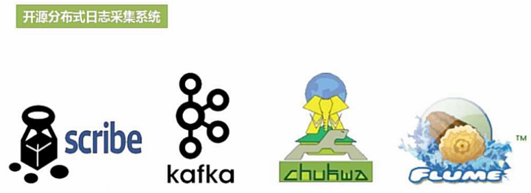

第7章, Spark Streaming
Table of Contents
流计算概述
静态数据和流数据
数据仓库(eg, Hive in Hadoop): 不断的把某些业务系统产生的数据经过抽取/转换加入数据仓库中,他是包含时间维度的—eg.一天一次. 如此就可以去分析过去一个月每天的库存变化情况等等. 数据仓库中保留了大量的历史时间线数据, 他是静态的.
数据库(eg, HBase in Hadoop): 数据库只是记录某一时刻的数据.
数据仓库 = time(数据库) 他俩都是 静态数据
电子商务网站, 根据用户点击流构建用户画像, 了解用户特征, 根据与你有相似特征的其他用户的购买行为对你进行实时推荐.
流数据有几大特点:
- 源源不断, 数据量大
- 来源多, 可以是套接字流, 可以是鼠标点击流, 可以是传感器流 etc.
- 相邻的数据无法保证时间线顺序, 数据顺序可能是颠倒的, 先到达的是历史数据,后到达的是当前数据,
批量计算和实时计算
流计算概念
流数据的价值是随着时间推移逐渐降低的.
流计算与Hadoop
用批处理的模式模拟流处理: 把流数据切成一个个小片段, 每一个小片段用批处理模式处理. Spark 就是这种方式取处理流数据的.
批处理批处理批处理
/----\/----\/----\/----\/----\/----\/----\/----\/----\/----\/----\/----\/----\
流数据: ------------------------------------------------------------------------------>
时间线

流计算框架

流计算处理流程

应用程序一直驻留在工作节点, 数据一来就处理, 处理完就往外扔.
并非等待用户发起查询, 而是得到结果就主动推送给用户.
Spark Streaming 简介


原始数据 1 秒切一次, 每切一次生成一个 RDD.


DStream 的本质就是 RDD 序列, 他不是像 DataFrame 有自己的结构.


Spark 只是通过 批处理 来模拟 流处理, 它本身并不具备像 Storm 一样毫秒级别的响应速度, 但是 Spark Streaming 有其自身的优点: 同时兼容批处理和流处理 , 你能够在 Spark的 小批处理窗口内, 把其他历史数据融合进来, 很好的应用于 需要历史数据和实时数据联合分析 的特定应用场合.
DStream 操作概述

普通 Spark 架构: app -> Driver -> sparkContext -> worker -> Executor <- task

当做流处理的时候, 你必须有一个监听程序一直跑在某个 Executor 上, 一个无休无止的 task. 这样的task 就叫做 Receiver. 他会一直接受某个数据源(eg, Kafka)送来的数据, 并进行相关的处理, 这个"处理"的逻辑就是我们编写的程序, 一般应用都会设置多个 Receiver 每个 Receiver 负责一个 input DStream.


| Spark | Spark SQL | Spark Streaming |
| RDD | DataFrame | StreamingContext |
| SparkContext | SparkSession | StreamingContext |
在SparkShell中:
可以从 SparkContext 对象来创建 StreamingContext 对象:
指明多长对数据流时间切分一次
-- ---------
new StreamingContext(sc, Seconds(1))
不在SparkShell中: 通过 SparkConf 对象生成 StreamingContext 对象.

1. val conf = new SparkConf().setAppName().setMaster
------------------------------------------------
|
|
|
|
v
2. new StreamingContext(conf, Seconds(1))
输入源
(基本输入源)文件流
对某一个目录下的文件实时监控, 只要有新的文件写到该目录, 就会把他的内容抓出来扔到Streaming去处理. eg, 比如日志文件. 在实时监控之前, 历史上已经有的文件不会进行任何捕捉. 他只捕捉动态变化的文件.
ssc.textFileStream("path/DirName") 生成一个文件数据流, 根据StreamingContext配置的切断时间(Seconts(num))进行切分. 其切分结果就是 RDD(with mutliple lines as
item inside), 注意这时候对多行String切成单词 就不能用 map , 必须使用 flatMap.